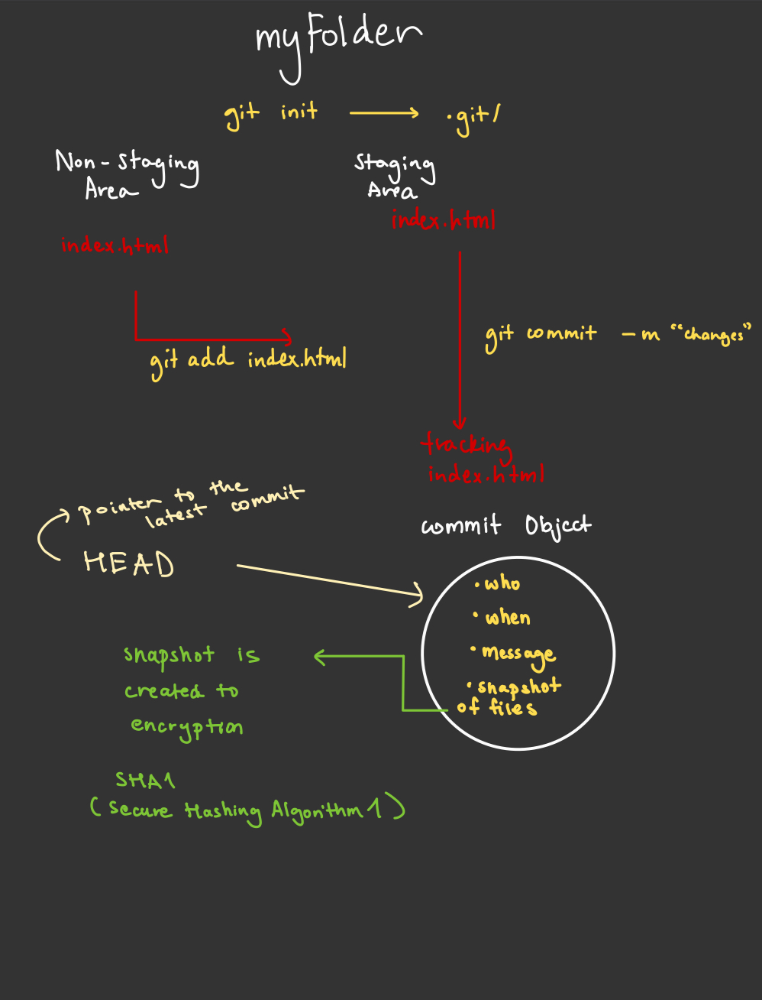

Git Dive Deep
git init
- default branch created while using git init is the master branch.
- When we initialize the repo, two regions are created.
- Staging area (where changes are prepared before commit)
- Non-staging area (working directory with untracked/modified files)
The .git directory contains:
- HEAD file (references current branch)
- config file (repository configuration)
- objects directory (stores all content)
- refs directory (stores pointers to commits)
Remove a local git repo
rm -rf .git/
This deletes the repository history.
Rename default branch name
git init --initial-branch=main
Sets initial branch to main instead of master.
Nested git repository. Never create a git repo inside a repo. Avoid this to avoid chaos.
Never create a git repo inside another repo (except for submodules)
Potential issues:
-
Conflicting .git directories
-
Confusing version control boundaries
-
Complex merge behaviors
git add
Core Functionality
Stages changes from working directory to staging area
Advanced Usage
Add a part of file to the staged area.
Interactive add (choose hunks)
git add -p
Add all tracked files (not new files)
git add -u
Add all tracked and untracked files
git add -A
# Add by file pattern
git add '*.js'
Behind the Scenes
- Creates SHA-1 hashes of file contents
- Stores compressed versions in object database
- Updates index file with new file modes and hashes
git commit
Commit Anatomy
Creates a commit object containing:
- Author info
- Commit message
- Pointer to tree object (snapshot of repo)
- Pointer to parent commit(s)
Advanced Options
# Amend previous commit
git commit --amend
# Amend previous commit with no commit message
git commit --amend --no-edit
# Sign commit cryptographically
git commit -S
# Commit with multiline message
git commit -m "Title" -m "Description"
# Commit with no changes (run pipeline)
git commit --allow-empty -m "dummy"
Technical Details
- Each commit has a unique SHA-1 hash
- Commit objects reference tree objects
- Tree objects reference blob objects (files) and other trees
git push
Advanced Techniques
# Push specific branch
git push origin branch-name
# Set upstream branch
git push -u origin branch-name
# Force push (use with caution)
git push --force
Protocols and Internals
- Can use HTTPS, SSH, or Git protocol
- Underlying transfer uses packfiles for efficiency
- Uses the "smart" protocol for modern servers
Push Rejection Scenarios
- Non-fast-forward: Remote has commits you don't have locally
- Solution:
git pullfirst to merge changes - Permission denied: Authentication issues
- Solution: Check SSH keys or credentials
- Shallow update not allowed: Pushing from shallow clone
- Solution: Perform full clone
git log
Gives last 2 commits
git log -n 2
Gives diff layout of commit status:
git log --pretty= short
git log --pretty= full
git log --pretty= fuller
git log --pretty= oneline
git log --pretty=form
at:"%h"
# prints commit id
git log --pretty=format: "%h"
# prints commit id and commit message
git log --pretty=format: "%h %s "
#prints the commit from a week ago
git log --since="1 week ago"
#prints the commit within an interval
git log --since="02/19/2024" --until="05/20/2025"
# shows you the commit history with the patch diff included
git log -p
git log
Summary
- Head is the pointer to the latest commit.
- You can change head.
- Every next commit points to the previous commit. It creates a linked list of commits.
